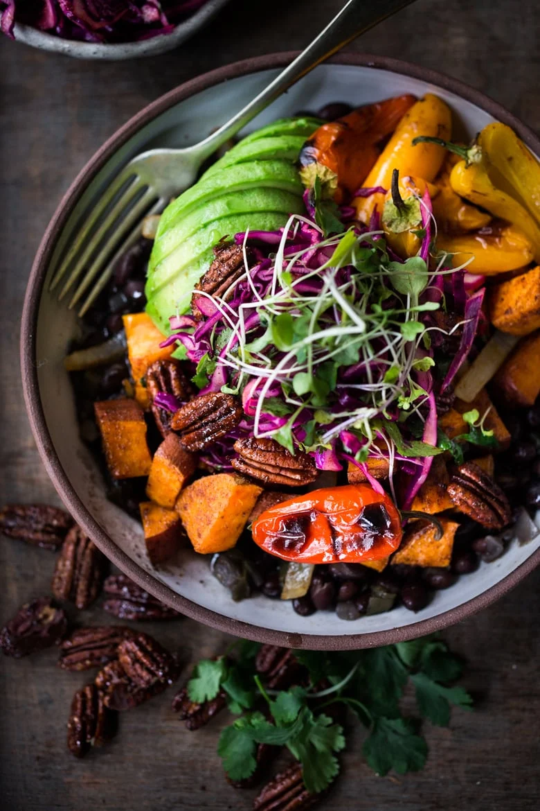

Vegan Salad Bowl

Description
Miso roasted tofu, coconut and edamame smash, with power grains, sweet chilli broccoli, sesame cabbage, and a pea and edamame medley.
Ingredients
- 2 teaspoons cumin
- 1 teaspoon ground chipotle
- 1/2 teaspoon ground kosher salt
- 1/2 red onion
- 1 medium sweet potato
- 8 baby bell peppers
- 1/2 cup pecans
- 2 teaspoons maple syrup
- 1 can seasoned black beans
- 1/4 red cabbage
- 1 tablespoon olive oil
- 1/4 cup chopped cilantro
- 1 teaspoon corriander
- 1/8 teaspoon kosher salt
- 1 tablespoon lime juice
Steps
- Preheat oven to 400F
- Mix cumin, chipotle and salt together in a small bowl.
- Place onion, sweet potato and peppers on a parchment lined sheet pan. Drizzle onion and potato with olive oil, and sprinkle generously with spice mix, tossing to coat all sides well. Use about 1/2 or 2/3 of the spice.
- Place in the oven for 20-30 minutes, tossing halfway through.
- NUTS: On another, smaller parchment-lined pan, toss the pecans with 2 teaspoons maple syrup and 1 teaspoon of the spice mix. Place on the oven (on a lower rack) for 5 minutes, toss and bake until lightly bronwed. When you pull them out, give nuts a quick toss to loosen them up and fluffen them.
- Heat the seasoned beans in a small pot on the stove and make the slaw.
- Chop or shred the cabbage and place in a medium bowl with the rest of the ingredients. Taste and adjust the lime and salt.
- Slice the Avocado.
- When the veggies are fork-tender, assemble the bowls.
- Serve with the chipotle mayo